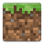

A few important notes.
While the experience is visually similar to the desktop edition of Ubuntu MATE, the underlying architecture is very different. This page will highlight a few of these differences.
Resizing the file system
Your file system has already been resized.
After setting up Ubuntu MATE for the first time on your Raspberry Pi 2, the file system will be restricted to the size of the original image, which is about 3.9 GB. Use this button to resize to fill the entire Micro-SD card.
Resize NowIncompatible Software
Some packages available for Ubuntu have only been written
and compiled for the i386 or amd64 architecture.
As the Raspberry Pi 2 is based on armv7, these packages will
not be available to install. Depending on the package, it may be possible
to compile this yourself or use an existing port.
Incompatible:
 Google Chrome
Google Chrome-  Minecraft (Java Edition)
 Adobe Flash
Adobe Flash VirtualBox
VirtualBox
Compatible:
 Chromium
Chromium- Minecraft: Pi Edition
- Pepper Flash
- QEMU
Upgrades
Please do not attempt to upgrade your Raspberry Pi 2 to a newer version of the distribution (for instance, from 15.04 to 15.10), as the underlying kernel is not designed to do this. This process will take a very long time to complete while potentially filling up your SD card to a point where there is no more free space.
It is safer to back up all of your data you wish to keep and re-flash the card with the new image. Attempting to upgrade may corrupt the SD card, prevent your installation from booting, or cause serve glitches.
You can, however, install regular updates via the
 Software Updater utility for your installed software.
Software Updater utility for your installed software.
Kernel Updates
The same kernel provided by the
Raspberry Pi foundation
is used in this edition of Ubuntu MATE. As this kernel is delivered
like a "firmware" blob, updates are not distributed via the
Software Updater or apt-get.
Instead, to update the kernel, open a terminal and run:
sudo rpi-updateHardware Acceleration
Currently, hardware accelerated applications are not supported as they are with Raspbian. Applications that rely on OpenGL ES libraries or require the GPU chip will fail to start.
For playing videos, the application omxplayer will be able to
do this and is pre-installed. If you are looking to play MPEG-2 or VC-1 video files
then you will need MPEG-2 and/or VC-1 licenses from the
Raspberry Pi Store.
Enable/Disable X11
For users who are looking to create their own headless "server" using Ubuntu MATE, there is a utility for toggling the graphical environment.
To disable X11 and login via the console:
sudo graphical disableTo enable X11 to restore the Ubuntu MATE desktop:
sudo graphical enableRelease Notes
To read up on release notes and changes by version, visit the Ubuntu MATE website.
 ubuntu-mate.org/raspberry-pi
ubuntu-mate.org/raspberry-pi